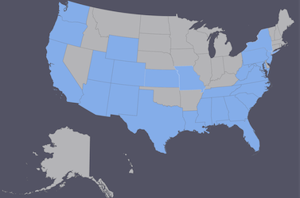

David Bowen
Full Stack JavaScript Web Developer
I like to sit in front of the computer and make things look nice. I also like to make things work and do stuff.
I like to sit in front of the computer and make things look nice. I also like to make things work and do stuff.
Hi, I'm David and I enjoy adventure.
One of my favorite parts of life is getting outside of my comfort zone; the more scared I am, the better.
How does this transfer to my work life? Simply put: I like to try new things and I will not quit on them until they are complete.
Since I am never satisfied with my current level of knowledge, I am always learning and trying to better myself mentally, both with regards to my career and outside of it.
I am a musician: an instrumentalist and a composer. I play guitar, piano, percussion, bass guitar, sing, and manipulate sound and tunes in many ways to produce music I find enjoyable.
I have played in many groups and have a lot of experience both writing songs and performing. If I could do anything for the rest of my life, it would be singing for a band and traveling the world on tour.
So far, I have traveled to 25 states: NC, SC, GA, FL, AL, MS, LA, TX, VA, WV, MD, PA, NY, NJ, MO, KS, CO, NM, AZ, WY, UT, CA, OR, WA.
Most of the time, I like to travel out of the country. Including the USA, I have visited 17 countries plus Vatican City.
Here is a brief summary of my journeys:
The first was when I went to Canada (Toronto) as a child on a family trip, but I don't remember much aside from Niagra Falls.
The second for 1 week in 2006 to Ukraine (Kiev).
The third for 2 weeks in 2013 to Italy (Rome, Florence, Brixen), Vatican City, Austria (Innsbruck), and Germany (Munich).
The fourth for 2 weeks in 2016 to Sweden (Stockholm), Finland (Helsinki), Denmark (Copenhagen), Switzerland (Geneva), Norway (Oslo), and back to Sweden (Stockholm).
The fifth for 14 weeks in 2017 to England (London, Stonehenge, Oxford, Stratford-Upon-Avon), Germany (Berlin, Munich), Spain (Madrid), Portugal (Lisbon, Cabo da Roca), Netherlands (Eindhoven, Enschede, Zwolle, Nijmegen, Amsterdam), Belgium (Antwerp, Bruges, Ghent, Brussels), France (Paris), Germany (Stuttgart), Italy (Milan, Angolo Terme: 1 month for WorkAway), Germany (Cologne), France (Paris) again, then finally England (London again).
I have played soccer since i was 8. I still play in recreational leagues these days and I referee as a side job for fun.
Soccer is also my favorite sport to watch. I mainly support the USA national team, but I also enjoy watching any quality teams play where I know the players - mostly the larger European teams.
I have been a fan of Football my entire life, being a lifelong supporter of the Carolina Panthers and Florida Gators.
For basketball: the Charlotte Hornets, Florida Gators, Duke Blue Devils, NC State Wolfpack, and my alma mater the UNC Charlotte 49ers.
My other favorite sport to watch is hockey, with my team being the Carolina Hurricanes.
In baseball, I support my local Charlotte Knights who I have been going to see in person since I was young. In the Major League, I support the Atlanta Braves.